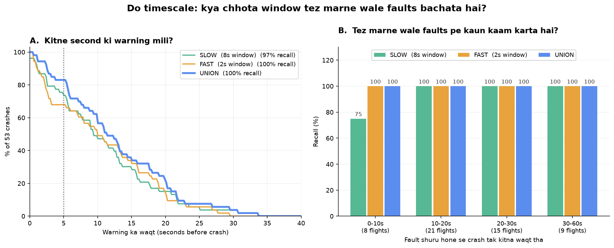
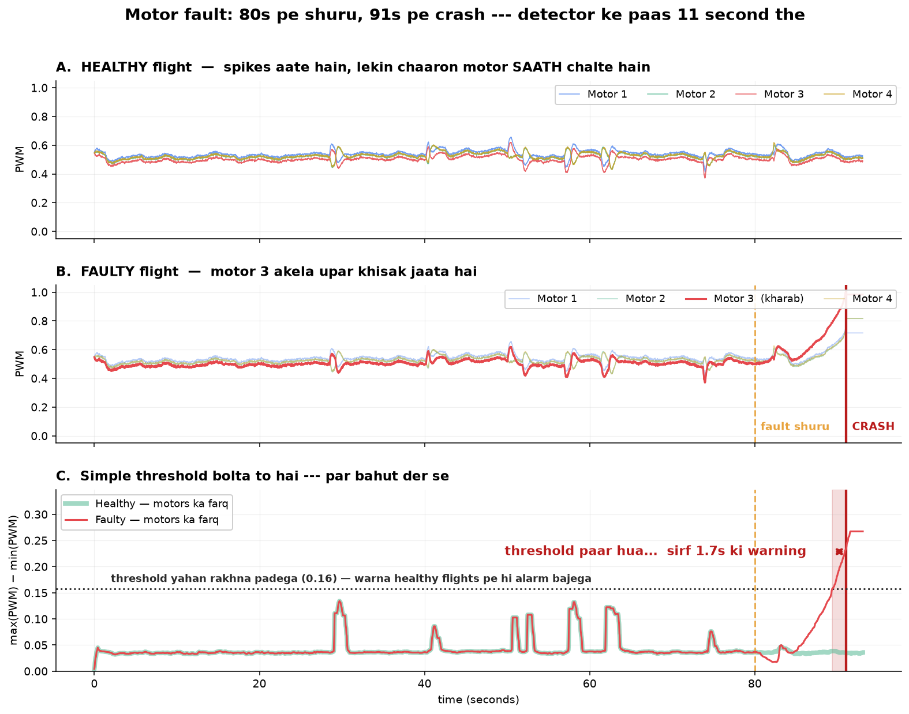

Motor ka current badhta hai, vibration ka pattern badalta hai, ek motor baaki teeno se zyada khinchta hai. Insaan ye 50 Hz ke 19 channels me nahi dekh sakta. Model dekh sakta hai — aur crash se median 11.4 second pehle dekh leta hai.
Fault pakadna aasan hai jab drone already gir raha ho. Kaam ki baat ye hai ki kitne second pehle pata chala. Isliye recall nahi, lead time naapa — alarm bajne se crash tak kitna waqt mila. Test set me 60 me se 53 faulty flights sach me crash hui; fault shuru hone se crash tak average 20 second the.

Isliye teen alag jagah test kiya — apna simulator, asli PX4 public logs, aur CMU ALFA (asli UAV, labelled fault onset). Har jagah ka nateeja alag kahani kehta hai.
Physics + PID autopilot. Faults crash tak badhte hain, aur crash ke baad ka data evaluation me nahi ginta.
Simulator pe fit kiya model asli logs pe 100% alarm bajata hai — distributions overlap tak nahi karte. Par tareeka transfer hota hai.
Pehli baar ground truth ke saath imtihaan — asli UAV, engine aur control-surface failures, onset ka waqt labelled.
Paanch approach try kiye — Mahalanobis baseline, LSTM autoencoder, LSTM forecaster, hybrid, aur multi-timescale. Jo jeeta wo sabse simple tha.
Mahalanobis — koi neural network nahi, bas window ka mean/std aur covariance — 74% crashes me 5+ second deta hai. Sabse accha neural model 72%.
Usse input dobara banana hota hai — jawab uske saamne rakha hota hai, wo copy kar deta hai. 81% recall, 12% false alarm. Wahi model jab agla pal predict karne laga to 98% / 0% ho gaya.
Validation set 25 se 100 flights karne se recall 45% → 77% ho gayi — code me ek line badle bina.
8s window ka matlab tha ki tez faults 8 second tak dikhte hi nahi. Doosra 2s detector jodne se wo limit hat gayi — naya model nahi, nayi soch.
11.4s sunne me achha lagta hai, par p25 sirf 5.8s hai aur ek flight ko 0.7s mile. Safety me worst case maayne rakhta hai.
Maine likha tha imu_drift telemetry se pakda hi nahi ja sakta. Ab wo 100% recall pe hai. Wo undetectable nahi tha — maine use itna halka banaya tha ki pakadne layak kuch tha hi nahi.
Har fault telemetry me alag tarah bolta hai — isliye ek hi detector sab pe kaam nahi karta, aur yahi multi-timescale design ki wajah bani.

Ye hissa isliye likha hai kyunki iske bina upar ke numbers se galat matlab nikalta hai.